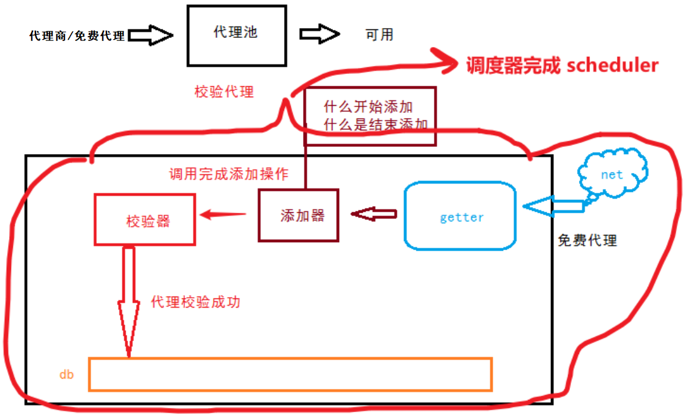

介绍
简单的实际使用场景是：爬虫程序先调用接口获取一个IP，同时还可以获取到这个IP的有效时间(还有一些服务商的IP时效的在购买套餐时就约定好的，是一个固定时间)，爬虫程序会在有效时间内一直使用这个代理IP，直到这个代理IP失效。
在大部分情况下，以上做法是可以接受的，但当采集量很大，需要使用的代理IP很多的情况下，或者更专业的采集工作中，通常都会用到代理IP池，否则你会有以下困扰
-
需要让每一个爬虫程序去提取代理IP很繁琐。
有时候从服务商那里提取代理IP时是需要发送APIKEY或者其他形式的秘钥，有的可能还需要调用端使用一些类似的SDK加密后发起调用，过程麻烦且有安全问题。如果IP服务商更换后或者套餐更换后需要调整具体的爬虫程序代码，尤其是涉及很多个爬虫程序时。又或者是爬虫程序不多，但爬虫程序被发布到几十台服务器节点上运行时，那么重新发布程序也是一个麻烦事儿。
-
程序错误可能导致的代理IP被浪费
有的IP是支持并发使用的，即使假设不能并发使用也可能存在浪费情况：如果爬虫程序获取到IP后，在后续的操作中出现了一些异常导致最终无法采集到数据，重新开始后那么上一次获取的代理可能会被浪费，举例：爬虫第一步获取代理IP，第二步通过代理IP去访问网站A页面，在请求时因为网络超时、在解析结果时抛出异常、在保存采集到的数据时发生异常
等，都有可能是本次数据采集不能正常完成，而在程序重新开始时，又需要获取新的IP。
-
爬虫程序为了合理利用代理IP需要额外的代码逻辑，这让爬虫程序变得复杂
假设从爬虫程序本身的代码入手解决第2个问题，那么大概会有两种方法：1，在第一步获取代理IP后将这个代理IP放入一个变量或者文件中，当第二步出错后重新开始第一步时先判断存放在变量中的代理IP是否还有效，有效的话继续复用。2，在第二步中添加try-catch逻辑捕获异常，再次尝试执行第二步，而不是重新从第一步开始
-
在运行中缺少有效的入口对代理IP服务进行监控
如果让每一个程序各自获取代理IP，那么可能很难找到一个环节作为切入点去统计代理IP的使用量、使用率、有效性等
-
无法统筹有限的代理IP资源
当代理IP资源有限，但是有多个数据采集任务时，很有可能导致采集任务A将IP耗尽，到了采集任务B需要启动时却没有IP可用。一般情况下，购买的代理服务商的套餐都是每天可以提取xxxxx个代理IP，今天用尽后就无法再提取了，只能等到第二天刷新数值。
鉴于以上问题，我琢磨着我们应该为爬虫程序提供一个独立的代理IP池服务，来应对这些问题
结构图

现阶段
- 对爬虫程序提供一个简单的HTTP URL接口，简单调用就能获取一个可用的IP
- 代理IP是被缓存起来的、缓存的IP数据可根据使用需求动态调节的、IP可复用的、能有效分配的
待开发
- 对代理IP的消耗情况进行统计、提供方法让爬虫程序通过简单的配合后能统计出代理IP的数据产出率、代理可用率进行统计
- 设置：某一类型的爬虫程序进行每日代理IP用量限制
- 针对某一IP被封禁,实现标记效果
- 代理源修正为VPS服务器拨号生成
代理池首页
添加白名单
获取http代理
获取地址
使用
import requests
http = requests.get(url='http://47.98.160.232:5000/get_http')
ip = http.json()['ip']
返回 json
{
"expire_time": "2023-08-31 17:07:21",
"ip": "59.63.101.102:4273",
"types": "http",
"use_num": "1"
}
获取https代理
获取地址
使用
import requests
https = requests.get(url='http://47.98.160.232:5000/get_https')
ip = https.json()['ip']
返回 json
{
"expire_time": "2023-08-31 18:00:09",
"ip": "113.229.0.106:4256",
"types": "https",
"use_num": "1"
}
查看代理数量